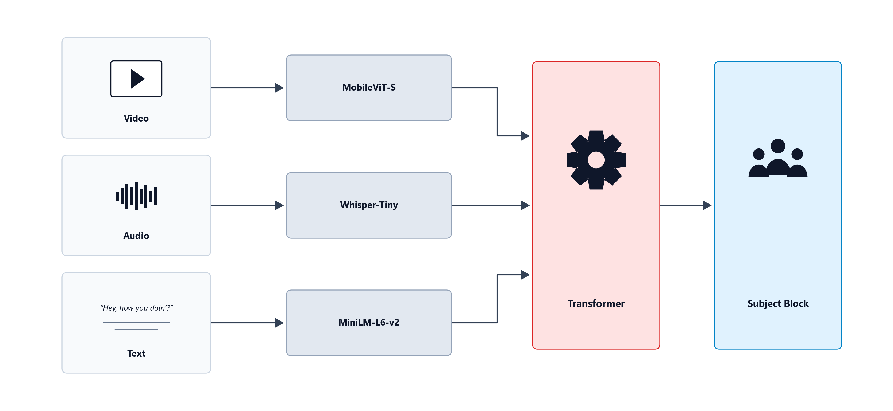
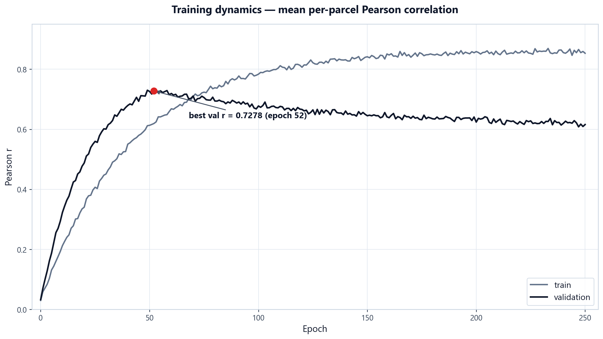

Mapping Brain Functions: The Challenge of Scale
For decades, neuroscience has faced a major bottleneck: the need for new brain recordings for every new experiment. This has made understanding brain mechanisms slow, costly, and difficult to scale and integrate.
Today, we’re releasing Flora. This lightweight encoding model acts as a digital mirror of human cortical activity in response to sight, sound and language — transforming months of lab work into seconds of computation, and running entirely in your browser.
Flora: a three-stage architecture
Flora predicts brain activity through a three-stage pipeline:
- 1Tri-modal Encoding: compact frozen encoders — MobileViT-S (video, 2 fps), Whisper-Tiny (audio, 16 kHz) and MiniLM-L6 (transcript) — capture the stimulus features shared by AI models and the human brain.
- 2Mixture-of-Experts Fusion: four transformer layers with top-2 routing, HRF-decay attention and gated modality pooling learn a universal multimodal representation at a constant compute cost.
- 3Brain Mapping: a subject-conditioned head maps the fused representation onto 400 Schaefer parcels, unpacked to the full fsaverage5 surface — 20,484 cortical vertices.

Lightweight by Design
Conventional encoding models spend hundreds of millions of parameters per subject. Flora keeps the perception frozen and trains only a ~14M-parameter fusion stack — stable on a single GPU, exportable to ONNX, executable on your laptop’s GPU.
High-quality predictions
Best validation Pearson r = 0.7278; parcel-wise r up to 0.93 on held-out clips — far above a linear ridge baseline.
Subject generalization
Per-subject FiLM conditioning absorbs anatomical variability: a new subject needs only two small vectors, no retraining.
In-browser inference
ONNX Runtime Web + WebGPU: the full pipeline — frames, audio, fusion, cortex — runs locally with no server.
Training Dynamics
Mean per-parcel correlation climbs steeply and peaks at epoch 52 (r = 0.7278), while train correlation keeps rising — the classic signature of a data-limited regime. As more fMRI recordings become available, this approach is likely to keep improving.

Where the Model Is Most Accurate
Accuracy follows function: visual cortex is predicted best by the video stream, auditory and language cortex by audio and text. Gated modality pooling lets each cortical region weigh the three streams according to its role — the same topography you can inspect live in the demo’s Compare view.
On held-out clips with measured fMRI, Flora’s predicted cortical movies track the recorded ones parcel by parcel — best parcels reach r ≈ 0.90 across TRs.
In-Silico Experiments
By lesioning individual modality streams, we can inspect the cortex in silico: silence the audio and auditory cortex goes quiet; remove the transcript and language areas fade. Try it live — the demo re-runs the fusion model in your browser with any combination of modalities:
Accelerating Future Research
We open-source the Flora paper, code and model weights to help accelerate research across three key areas:
Neuroscience
Simulate cortical responses to plan real experiments and deepen our understanding of the human brain.
Artificial Intelligence
Guide the development of AI architectures toward the efficiency of the human brain.
Healthcare
Provide a foundation to improve the diagnosis and treatment of brain disorders.
Want to go further?